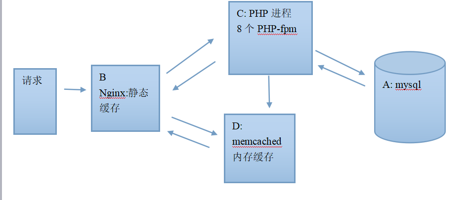

Nginx优化篇
其斤.匕禾页
站在巨人的肩膀上，做只勤奋的小蜜蜂！
首页
LNMP技术栈
laravel框架学习
秒杀系统学习
计算机基础
关于
Nginx优化篇
Sep 10, 2018
|
Nginx
文章目录
1.
大访问量优化整体思路
1.1.
减少请求
1.2.
对于不可避免的请求做服务集群+负载均衡
2.
实践
2.1.
架构
2.2.
配置B号Nginx静态缓存
Nginx大访问量优化以及实践，了解一下
大访问量优化整体思路
减少请求
合并css,背景图片，减少mysql查询
使用nginx的expires，利用浏览器缓存，减少请求
利用cdn来响应请求
对于不可避免的请求做服务集群+负载均衡
把任务平均分发到服务器中。
实践
架构

配置B号Nginx静态缓存
Linux学习之文本编辑器
php底层原理学习
分类
408
Linux
Nginx
Redis
docker
git
http
javascript
memcached
mysql
php
python
vuejs
web安全
前端构建工具
推文
项目
最近文章
laravel学习之路由
laravel学习之中间件
laravel学习之Facades
laravel学习之服务提供者
laravel学习之服务容器
laravel请求到响应的整个过程
类的反射和依赖注入
秒杀系统学习
laravel框架学习之重要的设计模式
laravel框架学习之需要了解的php基础
友情链接
小猴子与小耳朵